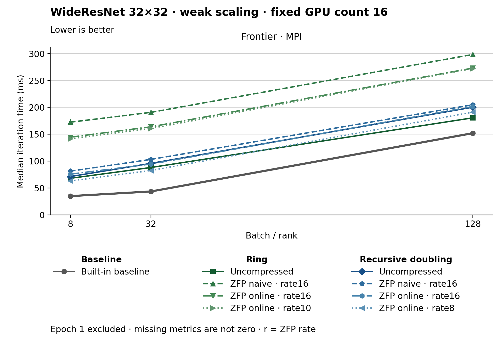

The figure uses lines. Methods use colors, line styles and markers. The metric is Median iteration time (ms). Frontier · MPI, Batch / rank 8: Built-in baseline has the lowest plotted value, 34.870. Frontier · MPI, Batch / rank 32: Built-in baseline has the lowest plotted value, 43.520. Frontier · MPI, Batch / rank 128: Built-in baseline has the lowest plotted value, 151.970. Epoch 1 is excluded. Values are medians; when repeated runs are available the selected repeat policy is median. These are not confidence intervals across repeated jobs. Missing or unrecorded metrics are omitted, not set to zero.
| Panel | Batch / rank | Method | Value | Runs |
|---|---|---|---|---|
| Frontier · MPI | 8 | none | 34.87 | 1 |
| Frontier · MPI | 8 | ring | 68.04 | 1 |
| Frontier · MPI | 8 | ring_zfp_naive:16 | 172.49 | 1 |
| Frontier · MPI | 8 | ring_zfp_online_coll:16 | 144.56 | 1 |
| Frontier · MPI | 8 | ring_zfp_online_coll:10 | 141.62 | 1 |
| Frontier · MPI | 8 | recursive_doubling | 71.3 | 1 |
| Frontier · MPI | 8 | recursive_doubling_zfp_naive:16 | 81.37 | 1 |
| Frontier · MPI | 8 | recursive_doubling_zfp_online_coll:16 | 75.72 | 1 |
| Frontier · MPI | 8 | recursive_doubling_zfp_online_coll:8 | 63.25 | 1 |
| Frontier · MPI | 32 | none | 43.52 | 1 |
| Frontier · MPI | 32 | ring | 88.12 | 1 |
| Frontier · MPI | 32 | ring_zfp_naive:16 | 190.7 | 1 |
| Frontier · MPI | 32 | ring_zfp_online_coll:16 | 163.84 | 1 |
| Frontier · MPI | 32 | ring_zfp_online_coll:10 | 160.84 | 1 |
| Frontier · MPI | 32 | recursive_doubling | 95.77 | 1 |
| Frontier · MPI | 32 | recursive_doubling_zfp_naive:16 | 103.19 | 1 |
| Frontier · MPI | 32 | recursive_doubling_zfp_online_coll:16 | 94.52 | 1 |
| Frontier · MPI | 32 | recursive_doubling_zfp_online_coll:8 | 82.52 | 1 |
| Frontier · MPI | 128 | none | 151.97 | 1 |
| Frontier · MPI | 128 | ring | 180.54 | 1 |
| Frontier · MPI | 128 | ring_zfp_naive:16 | 298.44 | 1 |
| Frontier · MPI | 128 | ring_zfp_online_coll:16 | 273.11 | 1 |
| Frontier · MPI | 128 | ring_zfp_online_coll:10 | 272.39 | 1 |
| Frontier · MPI | 128 | recursive_doubling | 200.36 | 1 |
| Frontier · MPI | 128 | recursive_doubling_zfp_naive:16 | 204.84 | 1 |
| Frontier · MPI | 128 | recursive_doubling_zfp_online_coll:16 | 201.6 | 1 |
| Frontier · MPI | 128 | recursive_doubling_zfp_online_coll:8 | 191.15 | 1 |